R$ 200 em consumo
Voucher para participantes aprovados.
BEM-VINDO À LOCOMOTIVACONVITE PARA INFLUENCIADORES
Pratos para compartilhar, bons encontros e uma experiência para saborear com calma.Você é nosso convidado para a inauguração da Locomotiva.
Conheça o convite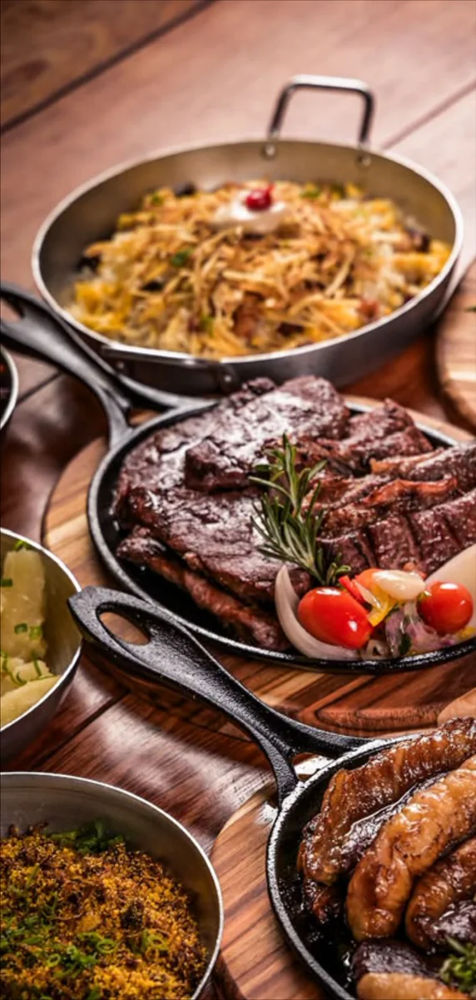
Voucher para participantes aprovados.
Período da campanha de inauguração.
Além de 2 Stories de aquecimento.
Participação sujeita à aprovação por e-mail.
Conhecer condições e participarConheça os sabores da Locomotiva e aproveite cada momento da sua visita.

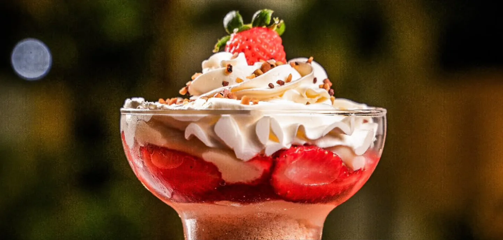
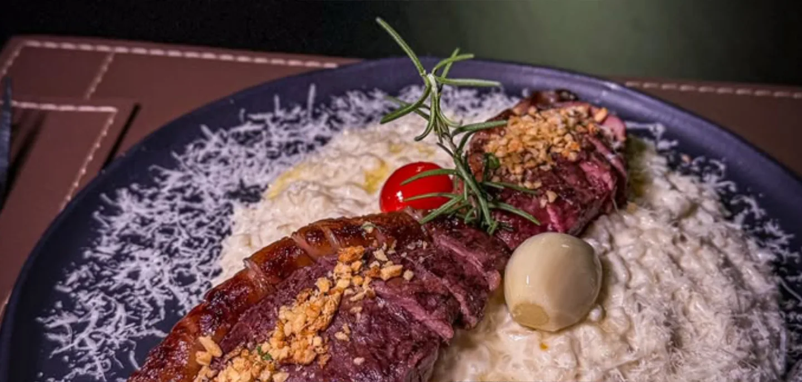
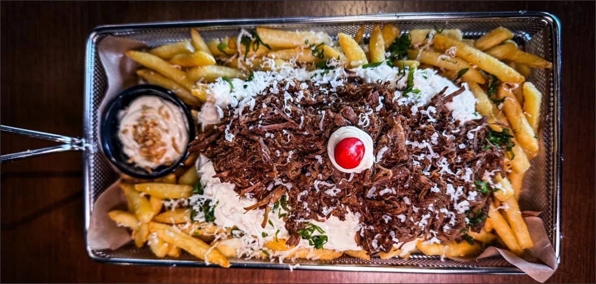
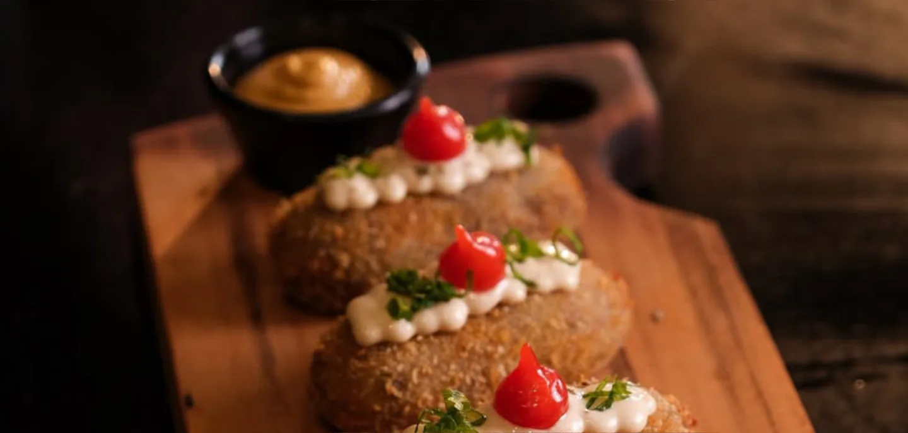
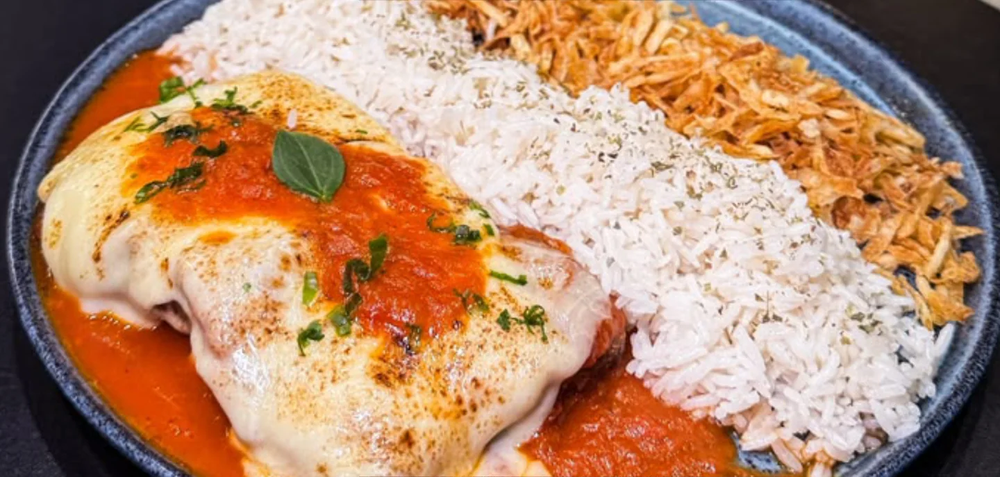
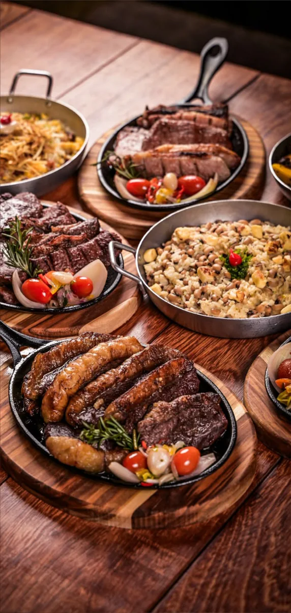
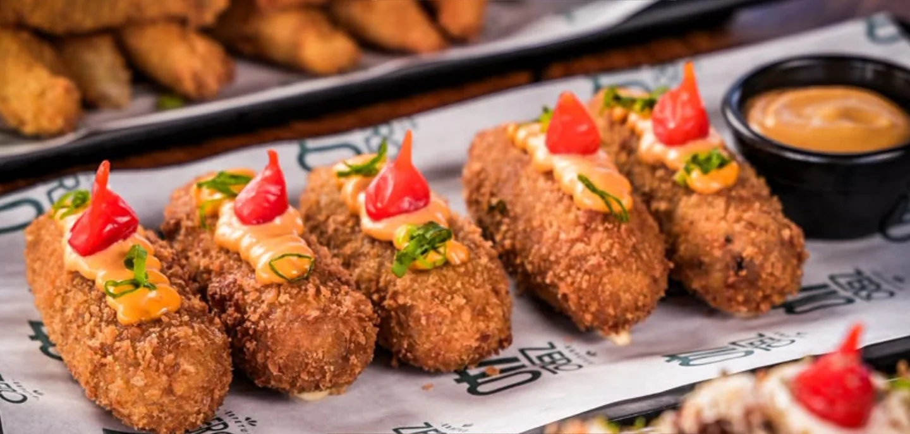
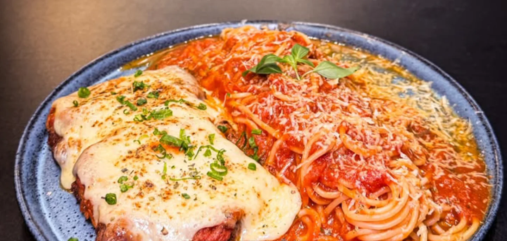
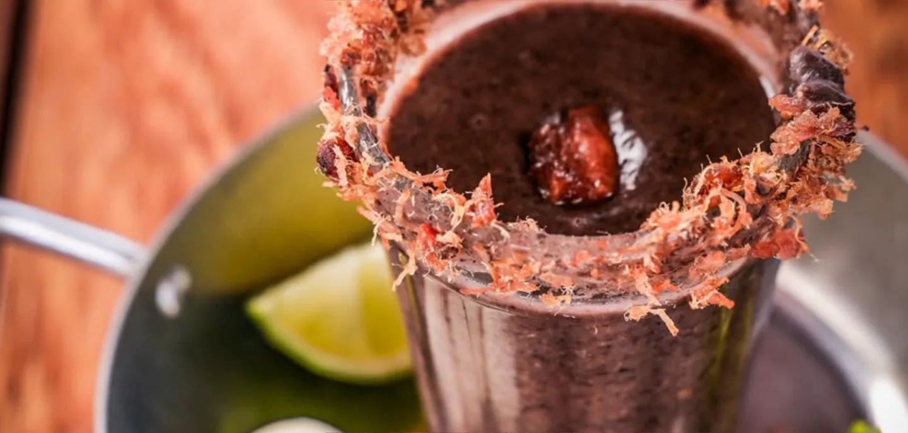
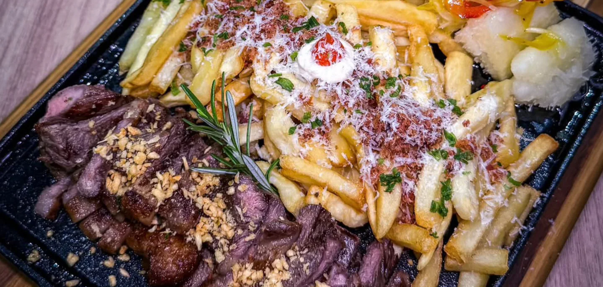
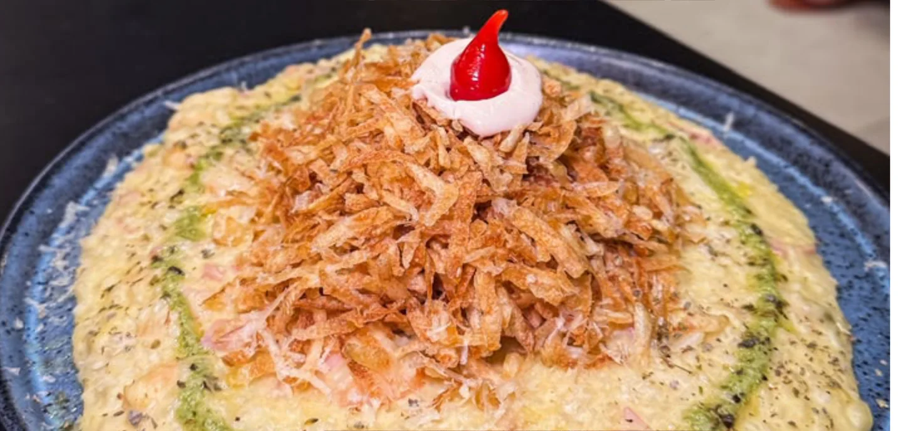

INAUGURAÇÃO • INFLUENCIADORES
Queremos você na nossa inauguração para viver e compartilhar a experiência Locomotiva.
Os participantes aprovados recebem um voucher de R$ 200 para consumir durante a visita agendada, conforme as condições da campanha.
21 a 30 de novembro de 2026 • 10 datas
Solicite uma data disponível e escolha o período da sua visita. Cada dia será destinado a um único influenciador.
Os horários de chegada disponíveis aparecem no formulário, conforme a configuração do restaurante.
Antes da visita: 2 Stories de aquecimento.
No dia da visita, escolha uma modalidade:
Escolha uma modalidade e compartilhe sua experiência, mostrando os pratos, o ambiente e suas impressões sobre a Locomotiva.
Após o cadastro, nossa equipe avaliará sua solicitação. A data e o horário só estarão confirmados após aprovação expressa por e-mail. Confira também a caixa de spam.
Enviar o cadastro não confirma sua visita.
Conheça as regras da campanha e o termo de autorização de uso de imagem.
Preencha seus dados, escolha uma data disponível, o horário e a modalidade de conteúdo.
Nossa equipe avaliará a solicitação e enviará a confirmação da participação.